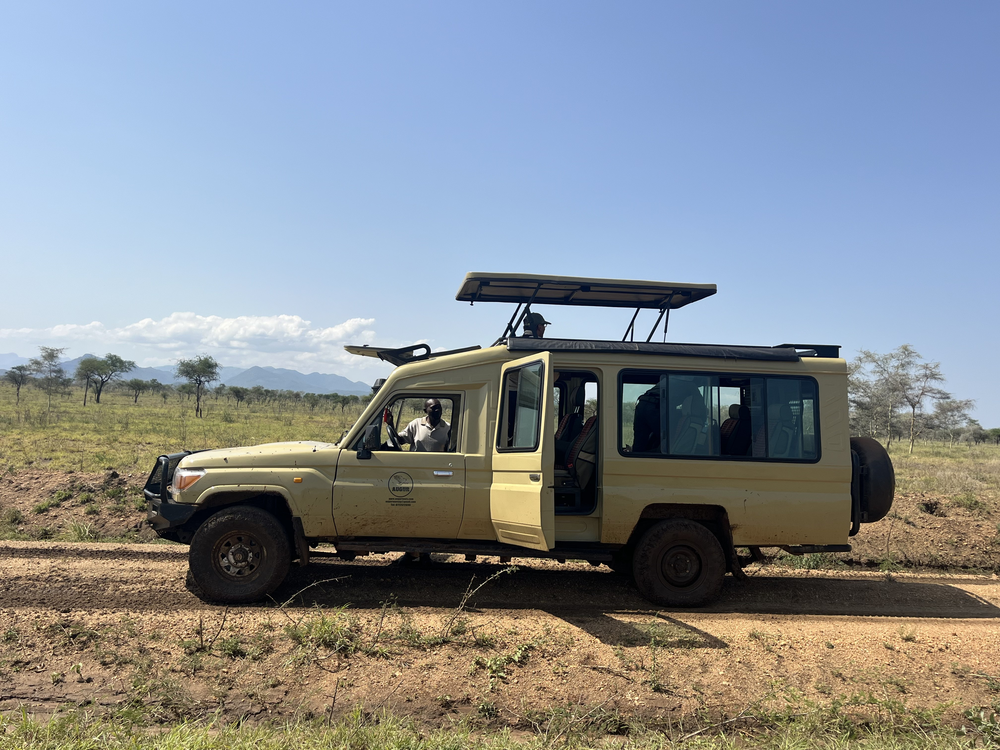

Uganda Gorilla Trekking
3-day Bwindi gorilla trekking from Kampala
Augur helps you bring together Bwindi or Mgahinga permits, accommodation, road or flight planning, private transport, and the rest of your Uganda safari in one clear plan.
Guide from US$1,495 per person for 2 adults sharing, including one standard gorilla permit. See the November guide and full basis below.
Your starting budget
3-day Bwindi gorilla trekking
Guide from US$1,495 per person
Based on 2 adults sharing one twin or double room, travelling together on a private road safari from Kampala or Entebbe. Accommodation: budget lodge / guesthouse.
November 2026 guide: from US$1,295 per person, on the same two-adult sharing basis, if a US$600 low-season foreign nonresident permit is available. The US$200 reduction reflects the permit saving only. UWA low-season permits cannot be rescheduled and require full permit payment at booking. Read the UWA tariff amendment ↗
Included in this guide
- Return road transport from one agreed Kampala or Entebbe pickup point, with fuel and an English-speaking driver-guide.
- Two nights in the stated accommodation category, sharing a twin or double room. The exact property and room are named in your quotation.
- Meals from lunch on day 1 through lunch on day 3, plus drinking water during the road safari.
- The activities and admission charges listed for this package.
- One standard gorilla trekking permit per adult, including trekking-day park entry and the UWA guide.
Quoted separately
International and domestic flights, visas, travel insurance, tips, personal spending, drinks other than the stated water, single-room supplements and activities not listed as included.
The standard guide includes a US$800 foreign nonresident permit. Minimum trekking age is 15. The lodge must match the confirmed trekking sector; allow a full road travel day each way. Porters, extra treks, flights and Lake Bunyonyi activities are extra.
Planning estimate researched 5 November 2026, using adult foreign nonresident admission rates. Guide for travel through December 2026; other dates and traveller categories are recosted. No lodge, vehicle or permit is reserved by this page. Your written quotation confirms availability, named accommodation, total price, payment schedule and cancellation conditions before you pay.
Quick Planning
Start with the choices that shape the whole trip.
A practical gorilla itinerary depends on more than the trekking day. Travel time, permit availability, lodge location, and your arrival or departure point all matter.
- First-time gorilla trekking
- Honeymoon and private journeys
- Trekkers aged 15 and above
- Uganda–Rwanda combinations
Sample Flow
A flexible three-day gorilla-trekking outline.
Day 1: Travel southwest
Travel from Kampala, Entebbe, or another agreed start point to the Bwindi or Mgahinga area. Your route can be planned around comfort, flight timing, stopovers, and lodge preference.
Day 2: Trekking day
After the required briefing, join the trekking activity with the relevant park authorities. The pace, duration, and terrain vary with the allocated gorilla family and conditions on the day.
Day 3: Return or extend
Return toward Entebbe or Kampala, relax at Lake Bunyonyi, continue to Queen Elizabeth, or plan a Rwanda extension depending on your schedule.
Your quote can include
Permit guidance, accommodation options, private transport, airport pickup, driver-guide support, meals where confirmed, and a route that fits your dates.
What to send
Give us the information that makes planning faster.
Travel dates
Tell us your preferred dates or month, including any flexibility around the trekking day.
Group details
Share the number of travelers, preferred room arrangement, and any mobility or dietary considerations relevant to the trip.
Starting point
Let us know whether you will begin in Entebbe, Kampala, Kigali, or another location so the route is realistic.
Trip extensions
Tell us if you would like wildlife viewing, chimpanzees, Lake Bunyonyi, Queen Elizabeth, Murchison Falls, Kigali, or Lake Kivu added.
Questions
Uganda Gorilla Trekking FAQ
When should I request a gorilla trekking quote?
Request a quote as early as possible once you know your travel month, group size, and preferred trekking location. Permit availability and lodge options can affect the itinerary.
What should I pack for the trekking day?
Comfortable hiking clothing, strong walking shoes, rain protection, drinking water, and a small day bag are sensible. Your final preparation note can be tailored to the season and route.
Can gorilla trekking be combined with Rwanda?
Yes. Augur can help plan a Uganda and Rwanda route around your start and finish points, travel dates, permits, hotels, and transport needs.
Choose your gorilla trekking package
Start with your dates, then shape the route.
Compare a short trekking visit with a longer wildlife journey. The sample three-day route above is a starting point; the final itinerary depends on permit availability and your arrival and departure plans.
What should your quotation show?
Ask for permits and availability, named accommodation, room occupancy, meals, transport, driver-guide support, route and total cost in a stated currency. Confirm any flights, border costs, insurance, tips or other extras separately.
Permit and lodge availability must be checked for your dates. A quotation request does not reserve a permit or confirm a booking.
Get a gorilla trekking quote ↗Travel with a local team
Get to know Augur before you travel.
See our field photographs, read traveller feedback and discuss the people and vehicle arrangements for your journey.

A personal conversation before you commit
Ask the team about your proposed driver-guide, the vehicle, luggage space, accommodation and daily route. Your written quotation should identify the arrangements being offered.
Speak to the team: +256 772 510 411